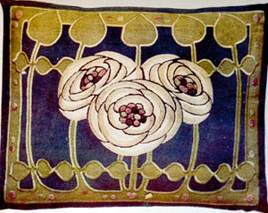
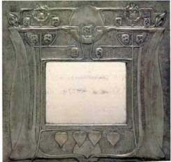

An important aspect of the Glasgow Style was the role played by women, the most notable being the sisters Frances and Margaret MacDonald. Frances married Herbert, ' Bertie', MacNair and Margaret married Charles Rennie Mackintosh. Both sisters had produced independent and distinctive work before being introduced to Mackintosh. Margaret Macdonald played a very significant role in helping to produce work commonly attributed to Mackintosh alone and is due a great deal of credit for his creations. A serious study ; The Studios of Frances and Margaret Macdonald has been published by Janice Helland ( see Reading) in which she argues that the work of the Macdonald sisters has been misleadingly overlooked.
Other influential designers included Jessie Newberry,(wife of Francis Newberry), who taught embroidery at the Glasgow School of Art, Ann Macbeth, a former student and creator of exquisite embroidered design, and Jessie King the illustrator and designer whose designs were sold by Liberty and Co .
It is interesting to note the significance of women designers and artists within the Scottish movement. There is no such presence in the English movement, certainly not in the early years which were dominated by male, middle class architects. Women were not allowed to join the Art Workers Guild which was controlled by a hierarchy headed by a Master. As the emancipation of women moved forward this may have allowed the greater involvement of women in later 'schools' particularly the Glasgow School. In the period leading up to the first world war, women in England tended to be mentioned as wives assisting their husbands for example 'Mrs Nelson Dawson' though there are many references to work by women in The Studio where their entries in competitions and handicraft exhibitions were noted and illustrated on occasions. These pieces included pottery, enamelling,repousse copper work, illustration or embroidery.See for example the Cushion embroidered by Anne Macbeth above.

Gertrude Jeckyll is regarded as the leading arts and crafts garden designer in Britain. She was a follower of William Morris and a self taught artist, silversmith and embroiderer. Working in partnership with Edward Lutyens, the architect, she designed several very significant gardens, helping to establish an arts and crafts style in landscaping in which house and garden were designed in harmony with the landscape.
Another significant contribution was made by Mrs Waterhouse who established the Yattendon Metalworking Class in 1890. Mrs Waterhouse was the wife of Victorian architect Alfred Waterhouse, she established the Yattendon evening class, and paid for the materials. She also provided most of the designs, which were inspired by garden plants and foliage. Items were sold through the Home Arts and Industries Association and some pieces were sold by Liberty and Co.
There were many small Art and Craft guilds for women and the Studio featured their work with an enthusiasm which was ahead of its time. There are however few records of women's work or attributable pieces and it would be very interesting to see more research into this area. It would also be good to see greater recognition of individual women designers in the way that art Deco pottery designers Clarice Cliff and Susie Cooper have been featured in recent years.